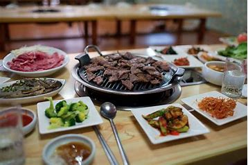

Korean Food
The best way to travel is through tasting the region's delicacies, and in Korea, food is more than just a meal—it's a gateway to its rich history and vibrant culture. Korean cuisine, with its bold flavors and diverse dishes, reflects centuries of tradition, shaped by geography, climate, and a deep connection to community and family.
From the communal sharing of kimchi, a staple in every household, to the sizzling barbecue enjoyed with friends, Korean food emphasizes balance, health, and the importance of bringing people together. Through every bite, you'll experience the heart of Korea's heritage and the soul of its people.

Bulgogi (불고기) means "fire meat" and is often made with beef. Its one of the most well-known Korean traditional foods, evolving over time and varying by region.
Download Recipe PDF View RecipeA versatile and flavorful dish, perfect for busy lifestyles, made in a large brass or stainless steel bowl. Its an iconic communal meal in Korea.
Download Recipe PDF View RecipeTteokbokki is a popular Korean street food made with rice cakes, fish cakes, soup stock, and gochujang (Korean chili paste).
Download Recipe PDF View Recipe